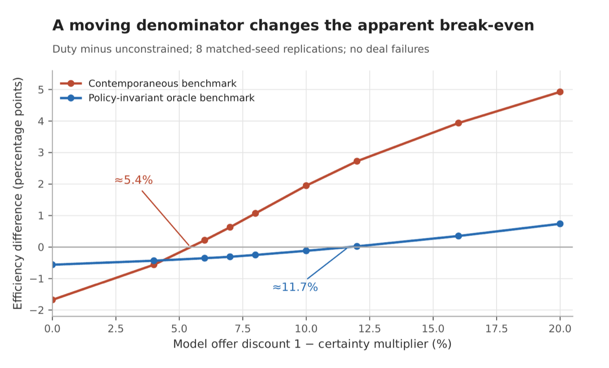

The question
When sellers prefer offers that are more likely to close, a cash buyer can win a home that a financed buyer values more. If a city wants to widen access for owner-occupiers, how would it tell which policy does that at the lowest cost?
The paper builds a simulated housing market and compares four instruments that change who wins: a cap on purchases per entity, a fair-share quota, a constant charge on institutional offers, and a duty that rises with local competition for a home.
Results
- 5.4% vs 11.7%the offer discount at which the duty stops costing value, measured against buyers still waiting and against a fixed benchmark (11.7%, 95% interval 11.5–11.8)
- 1.4–2.5×how much access counted over the whole run understates each instrument's effect on a cohort followed to purchase or exit
- 2rankings of the same instruments: tuned to one full-run access gain, a constant charge keeps more value than the duty; tuned to one cohort gain, the duty keeps slightly more
- 15.9%the fixed-benchmark break-even discount at the lowest institutional share (interval 15.6–16.1), against 11.7% at the baseline

Why it matters
- Policies aimed at institutional or cash buyers are usually judged by an access number and an efficiency number. How each is measured can decide which policy looks best.
- An efficiency benchmark computed over the buyers still waiting moves with the policy itself. A two-period example in the paper shows why.
- Access measured over the whole run mixes cohorts. Following one cohort to purchase or exit gives larger effects and a different order.
What the model can and cannot say
The comparisons are conditional on a stylised model and are not calibrated to any city. The model leaves out strategic bidding, renters' welfare and the cost of running each policy.
The empirical papers on this site motivate the question but do not confirm the model's premise for New York. Who Gets the House? finds that much of the observed cash discount there comes from who pays cash, not from the certainty of closing.
How to cite
@misc{loschi2026wedge,
author = {Loschi, Pablo},
title = {The Execution-Certainty Wedge: How Measurement Choices
Rank Housing-Access Instruments},
year = {2026},
howpublished = {Working paper and replication package, Zenodo},
doi = {10.5281/zenodo.22164073}
}